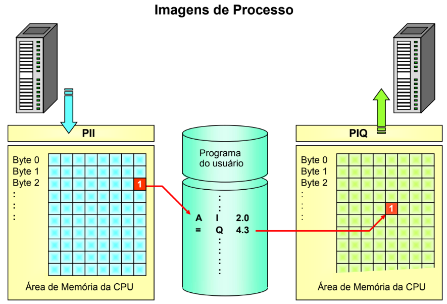

1 Introdução
O matérial a seguir basea-se no material didático de treinamento da Sitrain.
1.1 Arquitetura do Sistema
Para se estruturar um sistema de automação para controle de uma planta ou máquina é importante entender a organização da plataforma escolhida para o desenvolvimento da aplicação.
Observe a figura abaixo, a figura da esquerda representa a arquitetura de hardware, software e infra-estrutura que controlam a planta representada na figura da direita. Muitas vezes não é de escolha do desenvolvedor da aplicação a escolha da arquitetura, ou seja a mesma é imposta por inúmeras razões, pelo cliente, força de contrato, custos e etc.
Descrever as varias redes existentes em automação industrial e usadas pela Siemens comumente. Explorar a pagina 1 – 27 do manual da Siemens S7-TIA1 e o livro de Hans Berder para explicar um pouco sobre as redes usadas pela Siemens. Usar ainda a pagina 1 -28 para explicar sobre a linha de HMI da Siemens. Usar ainda a pagina 1 – 29. Usar ainda a pagina 1 – 30. Usar a pagina 1 -31 para explicar sobre os acionamentos de motores.
São inúmeros os fabricantes de PLCs no mercado e cada um com sua própria linguagem e características, com exceção das comuns a todos os PLCs. Imagina o trabalho que não daria reprogramar toda uma aplicação, grande é claro, feita em um PLC Rockwell para um PLC Siemens. Devido as diferenças que abordaremos brevemente abaixo, o trabalho seria tão grande quanto o tamanho da aplicação.
Adotando-se então um método de padronização do programa, ou melhor, desenvolvimento da aplicação, reduz o tempo de migrar a aplicação de uma plataforma para outra, focando esforços então em redesenhar as funcionalidades mais especificas da aplicação.
Antes de começarmos a detalhar as características dos PLC,
quero fazer um breve exercício com você
1.1.1 Generalizando a Arquitetura do Sistema
Imagine a mesma figura da arquitetura do sistema acima, porem agora vamos tirar os fabricantes e vamos utilizar o que vou tomar a liberdade de chamar de entidades, acrescentando um elemento que está implícito na figura acima, mas que é de muita importância, o driver.
São três entidades, PLC, Driver e o sistema SCADA ou IHM.
Como vimos existem vários fabricantes de PLC e de sistemas
SCADA1. Cada fabricante de SCADA possui um driver2
para cada tipo de PLC, como pode ser observado na figura acima.
Pode-se usar ainda solução na arquitetura, OPC cliente/server3
na camada do driver para resolver a comunicabilidade entre
fabricante.
, enfim aonde quero chegar é, está escolha também pode ser
imposta e com certeza vai gerar muita dor de cabeça para o
desenvolvedor ou responsável pela manutenção.
1 SCADA – Acrônimo para supervisory control and data acquisition. É um sistema computadorizado para monitoramento e controle de processos industriais e de infraestrutura.
2 Driver – Em nosso caso, software que permite o software supervisório acessar dados na memória do PLC. É o meio que o software supervisório faz uso para comunicar com o dispositivo do PLC.
3 OPC – Acrônimo para OLE for process control. São padrões abertos especificados para comunicação de dados entre dispositivos de controle de diferentes fabricantes.
Acho que você já deve estar compreendendo onde quero chegar.
Para continuarmos esse assunto preciso esclarecer que
diferenças são essas.
1.2 Definição das Entidades
1.2.1 PLC
Antes, algumas características básicas do PLC entre fornecedores.
É a unidade central de processamento, ou seja onde é executado o programa de controle da sua planta. Fazendo uma analogia, a unidade central de processamento dos programas que são executados no seu laptop ou desktop de casa é um Pentium ou Core i7, algo assim. O PLC é onde é executado o programa também e o resultado é apresentado na memória do mesmo, nas suas interfaces de entrada e saída, os cartões e/ou remotas.
Abaixo, podemos ver o ciclo da CPU resumido, uma característica muito importante, até para depurar problemas de lógica e fundamental para compreender a construção estruturada de programas em PLC.

Analisando a figura, primeiro o firmware da CPU lê as entradas, o que chamamos de PII (process-image input) atualiza a tabela dos cartões de entrada na memória, executa o programa, o resultado do programa que afeta uma saída física é atualizado na tabela de saída na memória e só então o PIQ (process-image output) atualiza as saídas físicas nos cartões de saída conforme o ultimo estado da tabela de imagem das saídas. Segue, abaixo, uma outra figura que procura retratar esse ciclo.

Isto não é uma verdade completa, alguns PLC mais atuais,
Contrologix, se comportam diferente e também existe as
aplicações especificas que utilizam recurso, funcionalidades,
especificas para aplicações criticas. Prometo colocar algum
caso mais para frente, mas esse não é nosso escopo.
O ciclo da CPU é uma característica comum entre os diferentes
fabricantes desta entidade, PLC.
Essas são características comuns entre PLC. Agora vejamos as diferenças entre dois fabricantes, Siemens e
Rockwell,
vamos estudar o caso de dois fabricantes desta mesma
entidade, o PLC. Observe abaixo a tabela comparativa de
diferenças entre o PLC da Rockwell e do PLC Siemens,
como exemplo.
Tab 01, Mostrando o mapa de memória e endereçamento das mesmas.
Antes de iniciar qualquer observação, vamos continuar nossa
analise das entidades da arquitetura do sistema exemplificada
acima.Por hora, destaco essa diferença como mais importante, que é o
mapa de memória entre os fabricantes.
1.2.2 Driver
Analisando a figura abaixo, podemos dizer que esta entidade da arquitetura do sistema é o software que coleta as informações da memória do PLC e disponibiliza para a entidade superior, que no nosso caso é o sistema SCADA, que vamos falar mais abaixo.
Em Construção
As informações desejadas que são coletadas são pré-configuradas no driver pelo integrador conforme necessidade.
Conforme dito acima, os n fabricantes de driver coletam as informações pré-configuradas nos PLCs e disponibilizam para o sistema de nível superior, como exemplo um sistema supervisório. O driver coleta as informações dos endereços de memória, ou melhor, faz acessos ao mapa de memória dos PLC, disponibilizando as informações em tabelas de dados então chamadas de base de dados, para operações de escrita e leitura.
O que muda entre os fabricantes de driver é a forma como você configura o driver, ou seja seu uso, parametrização. Pode-se entender então que o driver é uma caixa preta para o integrador, o mesmo configura os endereços que quer acessar na memória do PLC e não se preocupa em como a coleta é realizada, apenas formata o tipo de dado que deseja coletar. O que você precisa saber são as diferenças nos mapas de memória entre os fabricantes de PLC e como a memória está sendo utilizada pela aplicação para que configure corretamente o driver, este ultimo sim, de responsabilidade do desenvolvedor, partilhada entre o integrador do PLC e do sistema supervisório.
1.2.3 SCADA
Entende-se por estação supervisório e aquisição de dados. Ou seja, é o computador que coleta as informações do PLC, fazendo uso de um driver e disponibiliza as mesmas de forma gráfica, uma interface, para o usuário do equipamento através de um software supervisório.
Vamos analisar a figura abaixo.
Em Construção
Você precisa entender a diferença entre vista e scada, assim entenderá melhor o que é scada. A estação vista mostra as mesmas informações que o sistema SCADA, porem a diferença é que não possui driver, o vista coleta as informações do SCADA e este ultimo usa um driver para coletar as informações no PLC.
A diferença entre sistemas SCADA é restrita ao software supervisório de cada fabricante. Quero dizer, suas funcionalidade de histórico, recursos de edição de telas, quantidade de penas para construção de históricos, dentre outras. A aplicação SCADA fala com o driver, que é basicamente uma caixa-preta que é configurada para acessar o mapa de memória dos diferentes tipos de PLC.
1.3 Diferença entre as entidades de arquitetura do sistema
Agora que já entendemos cada entidade separadamente, podemos perceber que o objeto central do desenvolvimento, o driver, tem a função de “traduzir” os n tipos de PLC para a aplicação de nível superior que em nossa arquitetura é um software supervisório, ou seja, ler e escrever as informações no mapa de memória do PLC.
Esta observação por si só já aponta para o objeto central do escopo
do livro que é o PLC. Já que o driver é uma entidade configurada de
acordo com o mapa de memória do PLC, assim não tem influência em
como o mesmo está distribuído.
mas em nosso caso não é modificável pelo integrador, ou seja o
desenvolvedor do controle automático de processo da
aplicação.
Agora imagine o PLC, se não for adotado nenhum tipo de organização para construção da aplicação de controle no PLC pelas pessoas que desenvolvem e realizam a manutenção da planta, cada desenvolvimento usaria uma distribuição diferente, confundindo as pessoas que viessem a realizar a manutenção e/ou suporte.
Assim, nota-se a importância de se adotar algum tipo de metodologia para desenvolvimento e padronização para os diferentes tratamentos dados pelo programa as n funcionalidades do mesmo e com isso reduzir custos de manutenção e de futuras modificações de melhorias da planta.
Logo o primeiro objeto de nosso estudo é o padrão de segmentação do mapa de memória do PLC.
Você perceberá a importância do trabalho de segmentação de memória a medida que for apresentado a metodologia de construção do programa, Grafcet. A sequência dos passos do método são fundamentais para um bom desenvolvimento também. Gradualmente os passos serão utilizados ao longo do livro, empregando-se um projeto pratico, assim a compreensão da técnica se dará por completa.
Em Construção